2024 Higher Physics - Paper 2 questions
Source: Scottish Qualifications Authority (SQA) / Qualifications Scotland. This is a StemInteract HTML companion, not an official HTML edition. Selectable text is supplied alongside original page images. Use the images or original PDF for equations, powers, fractions, vector notation, tables and diagrams; text extraction cannot fully preserve mathematical layout.
Jump to a question
PDF page 1
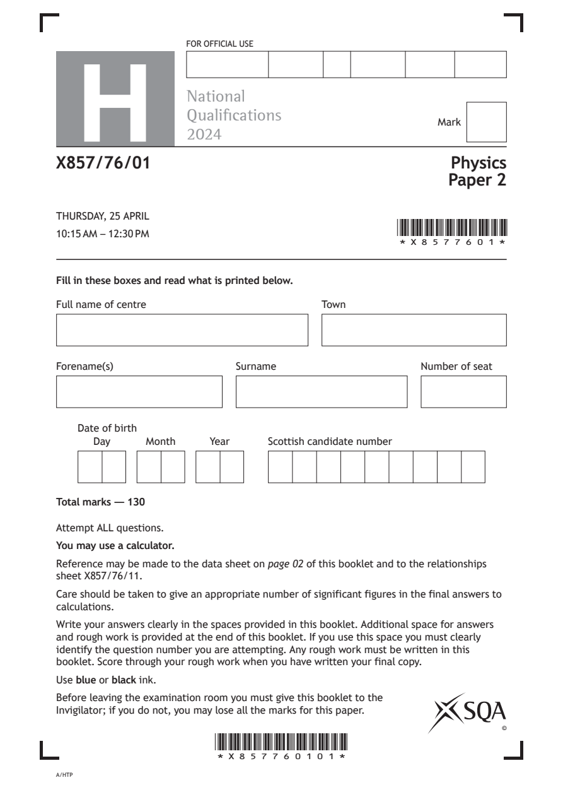
Selectable page text
FOR OFFICIAL USE
H
National
Qualications
Mark
2024
X857/76/01 Physics
Paper 2
THURSDAY, 25 APRIL
10:15 AM – 12:30 PM
*X8577601*
Fill in these boxes and read what is printed below.
Full name of centre Town
Forename(s) Surname Number of seat
Date of birth
Day Month Year Scottish candidate number
Total marks — 130
Attempt ALL questions.
You may use a calculator.
Reference may be made to the data sheet on page 02 of this booklet and to the relationships
sheet X857/76/11.
Care should be taken to give an appropriate number of significant figures in the final answers to
calculations.
Write your answers clearly in the spaces provided in this booklet. Additional space for answers
and rough work is provided at the end of this booklet. If you use this space you must clearly
identify the question number you are attempting. Any rough work must be written in this
booklet. Score through your rough work when you have written your final copy.
Use blue or black ink.
Before leaving the examination room you must give this booklet to the
Invigilator; if you do not, you may lose all the marks for this paper.
©
*X857760101*
A/HTPPDF page 2
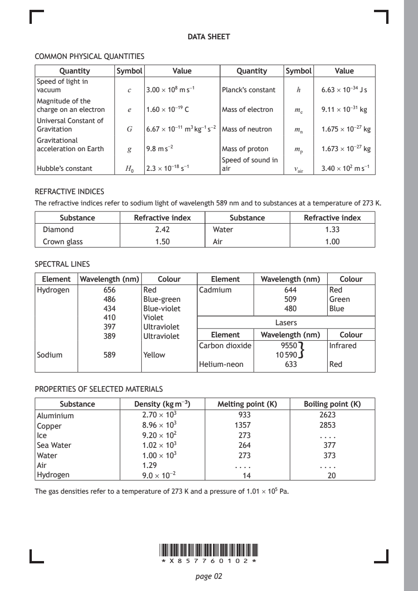
Selectable page text
DATA SHEET
COMMON PHYSICAL QUANTITIES
Quantity Symbol Value Quantity Symbol Value
Speed of light in
vacuum c 3.00 × 10⁸ m s⁻¹ Planck’s constant h 6.63 × 10⁻³⁴ J s
Magnitude of the
charge on an electron e 1.60 × 10⁻¹⁹ C Mass of electron mₑ 9.11 × 10⁻³¹ kg
Universal Constant of
Gravitation G 6.67 × 10⁻¹¹ m³ kg⁻¹ s⁻² Mass of neutron mₙ 1.675 × 10⁻²⁷ kg
Gravitational
acceleration on Earth g 9.8 m s⁻² Mass of proton mₚ 1.673 × 10⁻²⁷ kg
Speed of sound in
Hubble’s constant H₀ 2.3 × 10⁻¹⁸ s⁻¹ air vₐᵢᵣ 3.40 × 10² m s⁻¹
REFRACTIVE INDICES
The refractive indices refer to sodium light of wavelength 589 nm and to substances at a temperature of 273 K.
Substance Refractive index Substance Refractive index
Diamond 2.42 Water 1.33
Crown glass 1.50 Air 1.00
SPECTRAL LINES
Element Wavelength (nm) Colour Element Wavelength (nm) Colour
Hydrogen 656 Red Cadmium 644 Red
486 Blue-green 509 Green
434 Blue-violet 480 Blue
410 Violet
Lasers
397 Ultraviolet
389 Ultraviolet Element Wavelength (nm) Colour
Carbon dioxide 9550} Infrared
Sodium 589 Yellow 10 590
Helium-neon 633 Red
PROPERTIES OF SELECTED MATERIALS
Substance Density (kg m⁻³) Melting point (K) Boiling point (K)
Aluminium 2.70 × 10³ 933 2623
Copper 8.96 × 10³ 1357 2853
Ice 9.20 × 10² 273 . . . .
Sea Water 1.02 × 10³ 264 377
Water 1.00 × 10³ 273 373
Air 1.29 . . . . . . . .
Hydrogen 9.0 × 10⁻² 14 20
The gas densities refer to a temperature of 273 K and a pressure of 1.01 × 10⁵ Pa.
*X857760102*
page 02PDF page 3

Selectable page text
[Turn over for next question
DO NOT WRITE ON THIS PAGE
*X857760103*
page 03PDF page 4
Paper 2, Question 1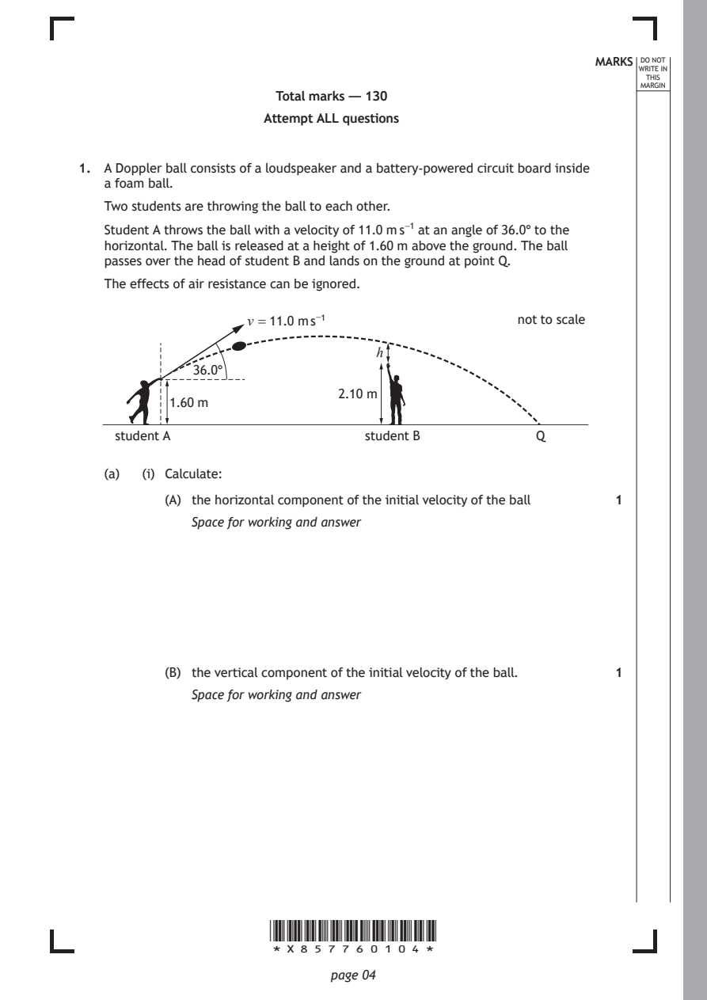
Selectable page text
MARKS _{W}^{D}_{R}^{O}_{I} _{T}^{N}OT
E IN
THIS
MARGIN
Total marks — 130
Attempt ALL questions
1. A Doppler ball consists of a loudspeaker and a battery-powered circuit board inside
a foam ball.
Two students are throwing the ball to each other.
Student A throws the ball with a velocity of 11.0 m s⁻¹ at an angle of 36.0° to the
horizontal. The ball is released at a height of 1.60 m above the ground. The ball
passes over the head of student B and lands on the ground at point Q.
The effects of air resistance can be ignored.
v = 11.0 m s⁻¹ not to scale
h
36.0°
2.10 m
1.60 m
student A student B Q
(a) (i) Calculate:
(A) the horizontal component of the initial velocity of the ball 1
Space for working and answer
(B) the vertical component of the initial velocity of the ball. 1
Space for working and answer
*X857760104*
page 04PDF page 5
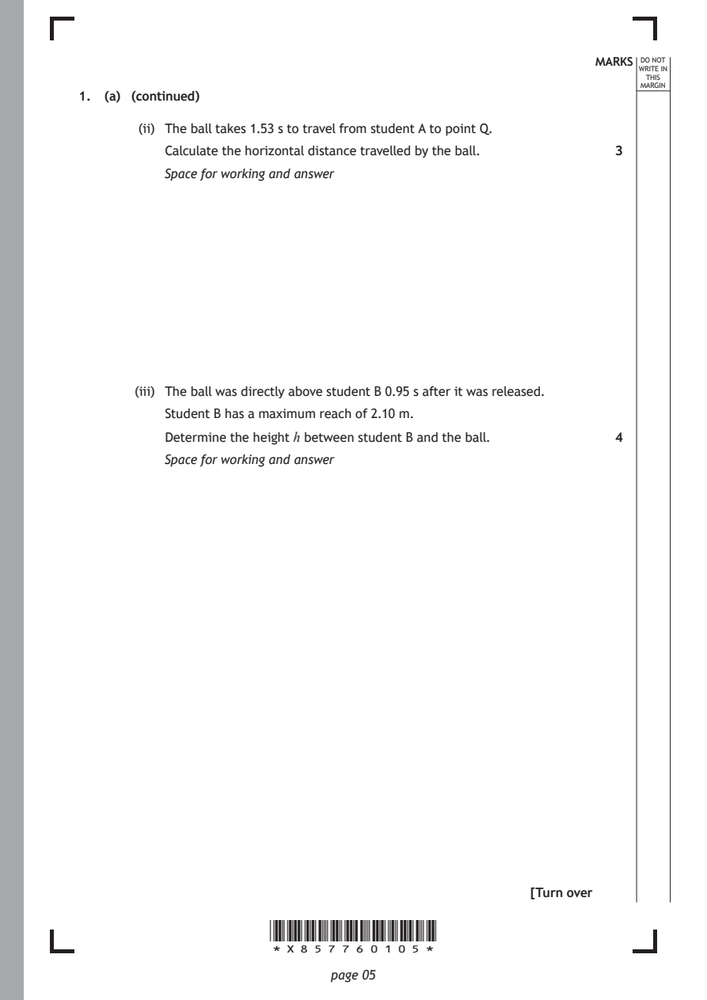
Selectable page text
MARKS _{W}^{D}_{R}^{O}_{I} _{T}^{N}OT
E IN
THIS
MARGIN
1. (a) (continued)
(ii) The ball takes 1.53 s to travel from student A to point Q.
Calculate the horizontal distance travelled by the ball. 3
Space for working and answer
(iii) The ball was directly above student B 0.95 s after it was released.
Student B has a maximum reach of 2.10 m.
Determine the height h between student B and the ball. 4
Space for working and answer
[Turn over
*X857760105*
page 05PDF page 6
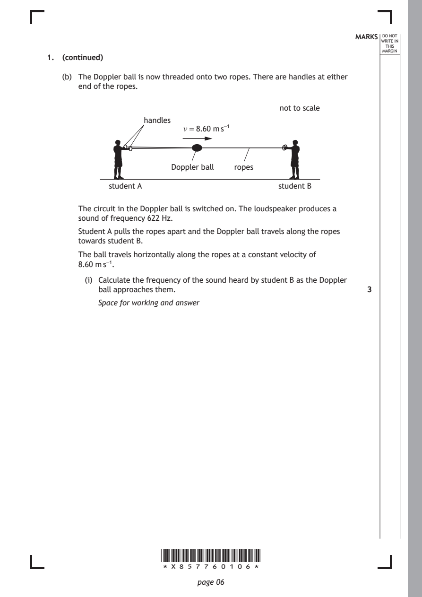
Selectable page text
MARKS _{W}^{D}_{R}^{O}_{I} _{T}^{N}OT
E IN
THIS
MARGIN
1. (continued)
(b) The Doppler ball is now threaded onto two ropes. There are handles at either
end of the ropes.
not to scale
handles
v = 8.60 m s⁻¹
Doppler ball ropes
student A student B
The circuit in the Doppler ball is switched on. The loudspeaker produces a
sound of frequency 622 Hz.
Student A pulls the ropes apart and the Doppler ball travels along the ropes
towards student B.
The ball travels horizontally along the ropes at a constant velocity of
8.60 m s⁻¹.
(i) Calculate the frequency of the sound heard by student B as the Doppler
ball approaches them. 3
Space for working and answer
*X857760106*
page 06PDF page 7
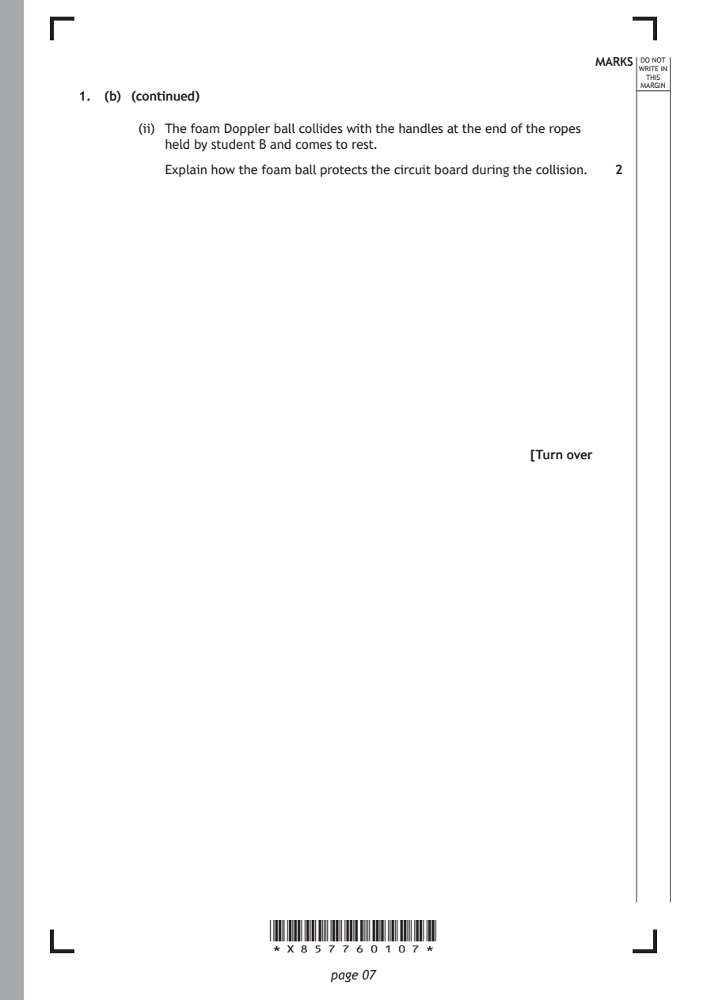
Selectable page text
MARKS _{W}^{D}_{R}^{O}_{I} _{T}^{N}OT
E IN
THIS
MARGIN
1. (b) (continued)
(ii) The foam Doppler ball collides with the handles at the end of the ropes
held by student B and comes to rest.
Explain how the foam ball protects the circuit board during the collision. 2
[Turn over
*X857760107*
page 07PDF page 8
Paper 2, Question 2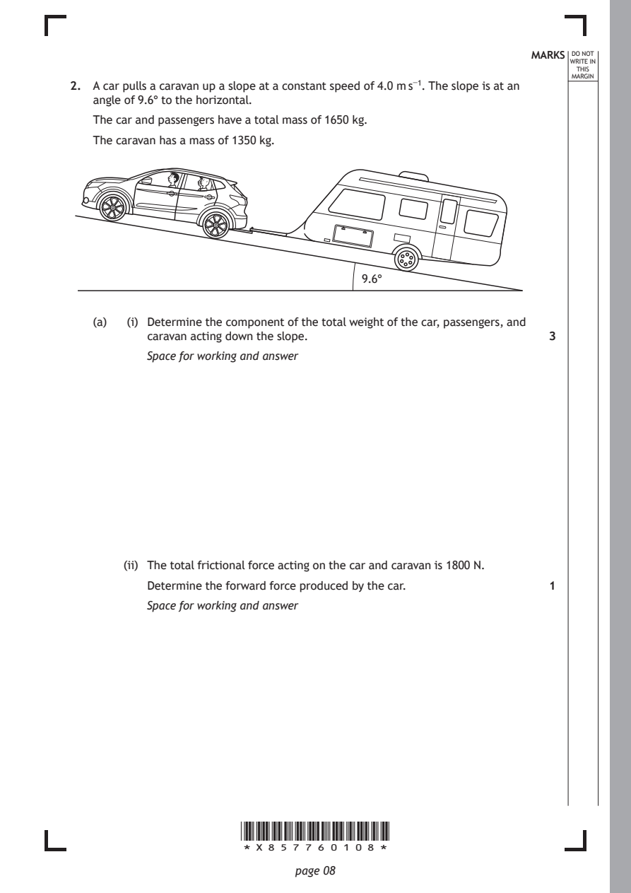
Selectable page text
MARKS _{W}^{D}_{R}^{O}_{I} _{T}^{N}OT
E IN
THIS
MARGIN
2. A car pulls a caravan up a slope at a constant speed of 4.0 m s⁻¹. The slope is at an
angle of 9.6° to the horizontal.
The car and passengers have a total mass of 1650 kg.
The caravan has a mass of 1350 kg.
9.6°
(a) (i) Determine the component of the total weight of the car, passengers, and
caravan acting down the slope. 3
Space for working and answer
(ii) The total frictional force acting on the car and caravan is 1800 N.
Determine the forward force produced by the car. 1
Space for working and answer
*X857760108*
page 08PDF page 9
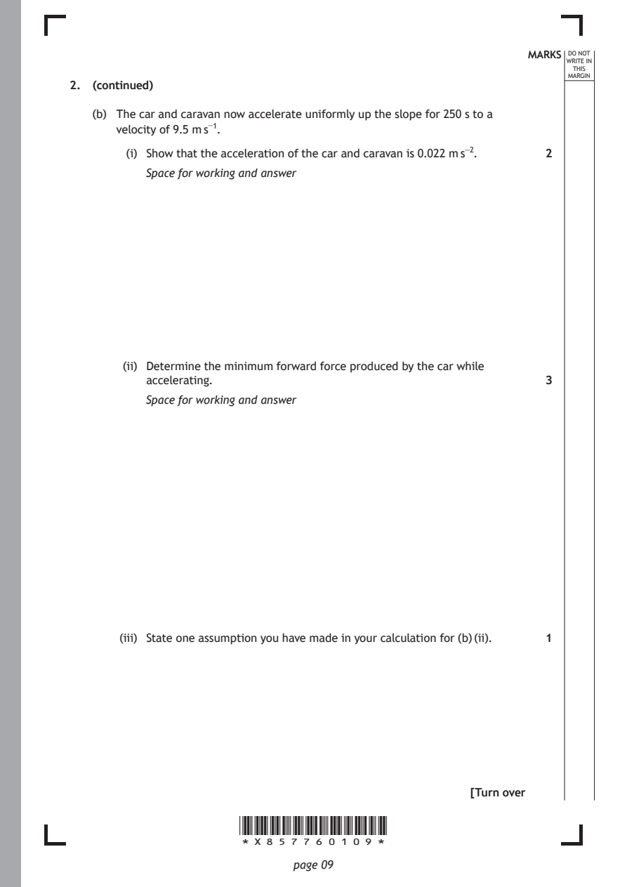
Selectable page text
MARKS _{W}^{D}_{R}^{O}_{I} _{T}^{N}OT
E IN
THIS
MARGIN
2. (continued)
(b) The car and caravan now accelerate uniformly up the slope for 250 s to a
velocity of 9.5 m s⁻¹.
(i) Show that the acceleration of the car and caravan is 0.022 m s⁻². 2
Space for working and answer
(ii) Determine the minimum forward force produced by the car while
accelerating. 3
Space for working and answer
(iii) State one assumption you have made in your calculation for (b) (ii). 1
[Turn over
*X857760109*
page 09PDF page 10
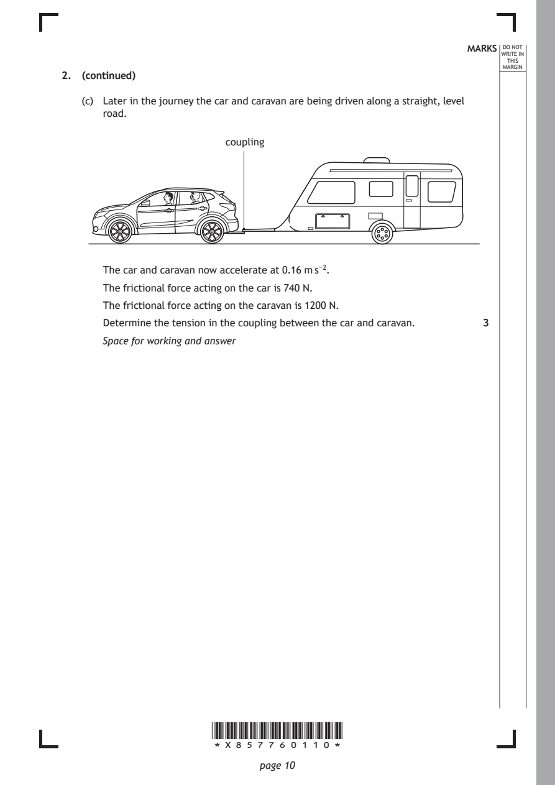
Selectable page text
MARKS _{W}^{D}_{R}^{O}_{I} _{T}^{N}OT
E IN
THIS
MARGIN
2. (continued)
(c) Later in the journey the car and caravan are being driven along a straight, level
road.
coupling
The car and caravan now accelerate at 0.16 m s⁻².
The frictional force acting on the car is 740 N.
The frictional force acting on the caravan is 1200 N.
Determine the tension in the coupling between the car and caravan. 3
Space for working and answer
*X857760110*
page 10PDF page 11
Selectable page text
[Turn over for next question
DO NOT WRITE ON THIS PAGE
*X857760111*
page 11PDF page 12
Paper 2, Question 3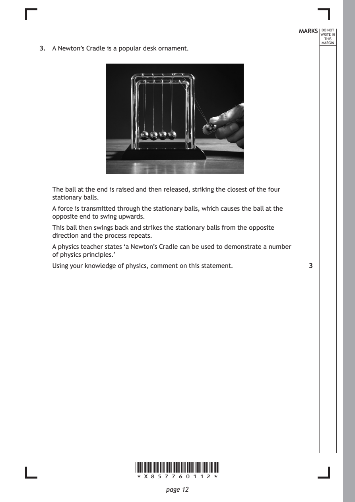
Selectable page text
MARKS _{W}^{D}_{R}^{O}_{I} _{T}^{N}OT
E IN
THIS
MARGIN
3. A Newton’s Cradle is a popular desk ornament.
The ball at the end is raised and then released, striking the closest of the four
stationary balls.
A force is transmitted through the stationary balls, which causes the ball at the
opposite end to swing upwards.
This ball then swings back and strikes the stationary balls from the opposite
direction and the process repeats.
A physics teacher states ‘a Newton’s Cradle can be used to demonstrate a number
of physics principles.’
Using your knowledge of physics, comment on this statement. 3
*X857760112*
page 12PDF page 13
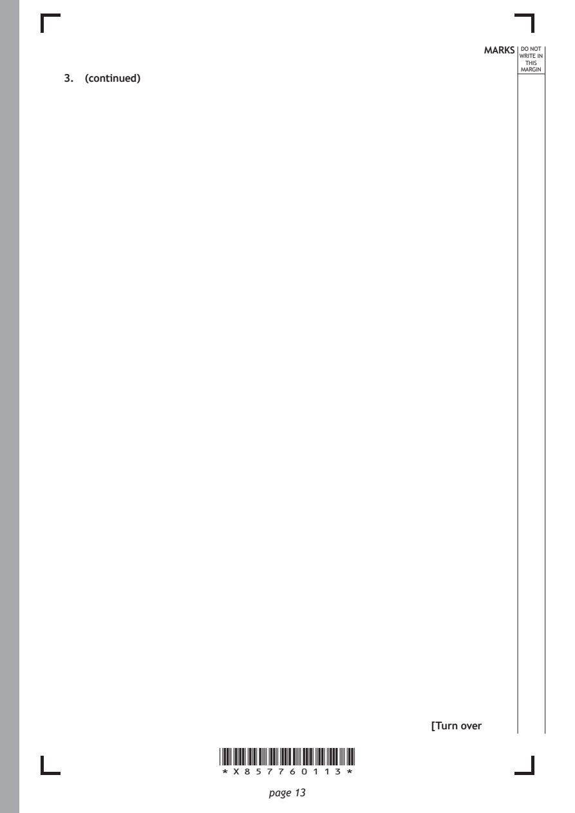
Selectable page text
MARKS _{W}^{D}_{R}^{O}_{I} _{T}^{N}OT
E IN
THIS
MARGIN
3. (continued)
[Turn over
*X857760113*
page 13PDF page 14
Paper 2, Question 4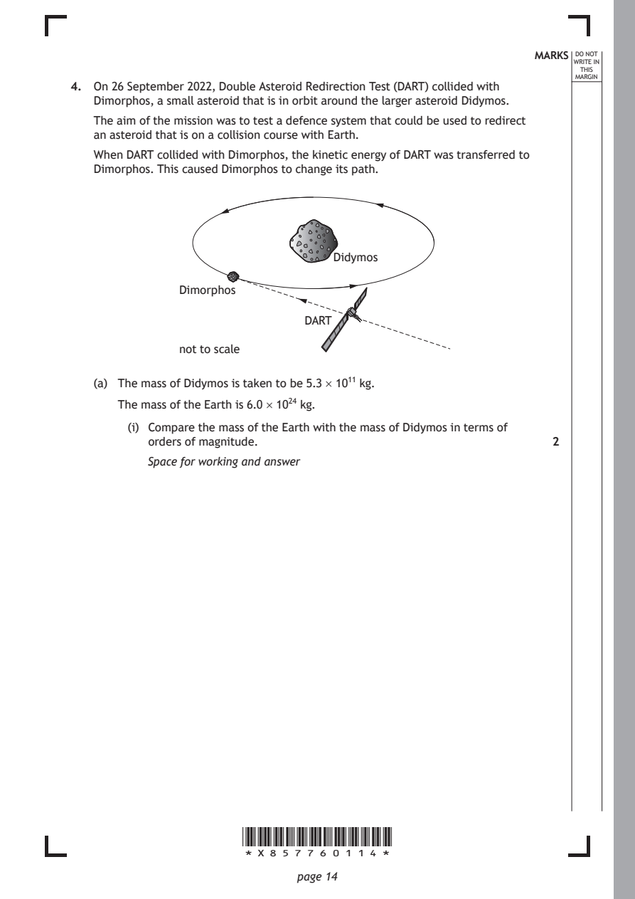
Selectable page text
MARKS _{W}^{D}_{R}^{O}_{I} _{T}^{N}OT
E IN
THIS
MARGIN
4. On 26 September 2022, Double Asteroid Redirection Test (DART) collided with
Dimorphos, a small asteroid that is in orbit around the larger asteroid Didymos.
The aim of the mission was to test a defence system that could be used to redirect
an asteroid that is on a collision course with Earth.
When DART collided with Dimorphos, the kinetic energy of DART was transferred to
Dimorphos. This caused Dimorphos to change its path.
Didymos
Dimorphos
DART
not to scale
(a) The mass of Didymos is taken to be 5.3 × 10¹¹ kg.
The mass of the Earth is 6.0 × 10²⁴ kg.
(i) Compare the mass of the Earth with the mass of Didymos in terms of
orders of magnitude. 2
Space for working and answer
*X857760114*
page 14PDF page 15
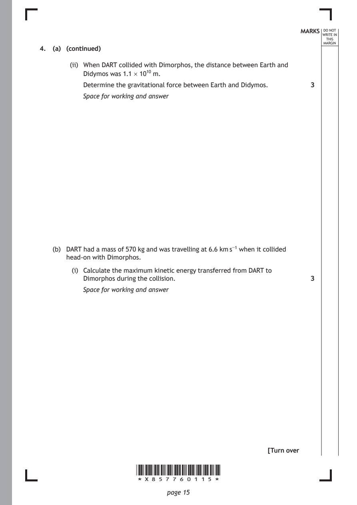
Selectable page text
MARKS _{W}^{D}_{R}^{O}_{I} _{T}^{N}OT
E IN
THIS
MARGIN
4. (a) (continued)
(ii) When DART collided with Dimorphos, the distance between Earth and
Didymos was 1.1 × 10¹⁰ m.
Determine the gravitational force between Earth and Didymos. 3
Space for working and answer
(b) DART had a mass of 570 kg and was travelling at 6.6 km s⁻¹ when it collided
head-on with Dimorphos.
(i) Calculate the maximum kinetic energy transferred from DART to
Dimorphos during the collision. 3
Space for working and answer
[Turn over
*X857760115*
page 15PDF page 16
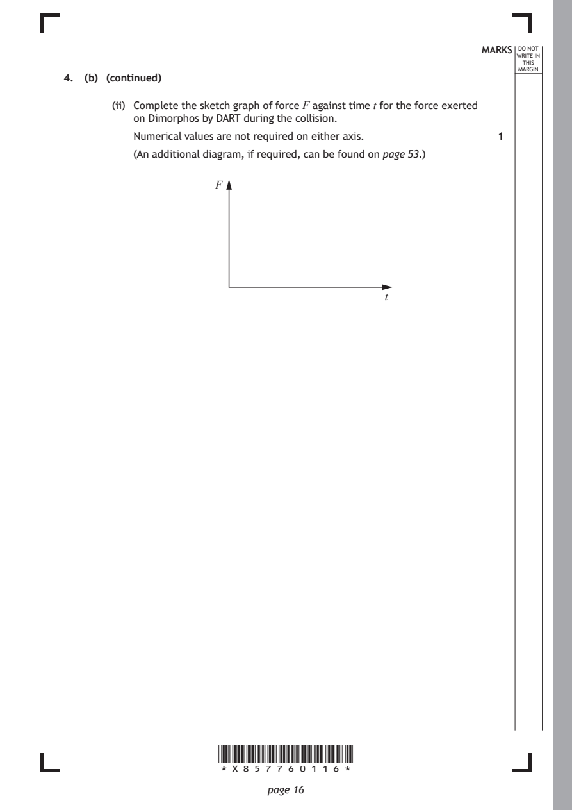
Selectable page text
MARKS _{W}^{D}_{R}^{O}_{I} _{T}^{N}OT
E IN
THIS
MARGIN
4. (b) (continued)
(ii) Complete the sketch graph of force F against time t for the force exerted
on Dimorphos by DART during the collision.
Numerical values are not required on either axis. 1
(An additional diagram, if required, can be found on page 53.)
F
t
*X857760116*
page 16PDF page 17
Selectable page text
[Turn over for next question
DO NOT WRITE ON THIS PAGE
*X857760117*
page 17PDF page 18
Paper 2, Question 5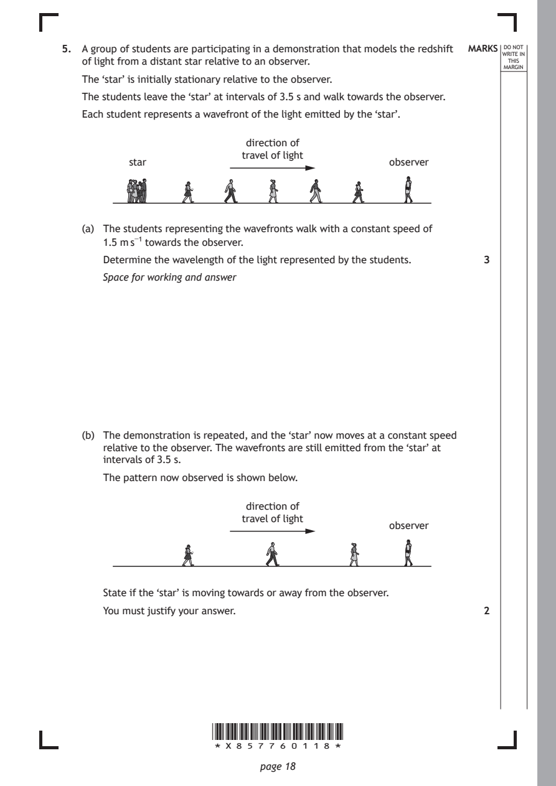
Selectable page text
5. A group of students are participating in a demonstration that models the redshift MARKS _{W}^{D}_{R}^{O}_{I} _{T}^{N}OT
E IN
of light from a distant star relative to an observer. THIS
MARGIN
The ‘star’ is initially stationary relative to the observer.
The students leave the ‘star’ at intervals of 3.5 s and walk towards the observer.
Each student represents a wavefront of the light emitted by the ‘star’.
direction of
travel of light
star observer
(a) The students representing the wavefronts walk with a constant speed of
1.5 m s⁻¹ towards the observer.
Determine the wavelength of the light represented by the students. 3
Space for working and answer
(b) The demonstration is repeated, and the ‘star’ now moves at a constant speed
relative to the observer. The wavefronts are still emitted from the ‘star’ at
intervals of 3.5 s.
The pattern now observed is shown below.
direction of
travel of light
observer
State if the ‘star’ is moving towards or away from the observer.
You must justify your answer. 2
*X857760118*
page 18PDF page 19
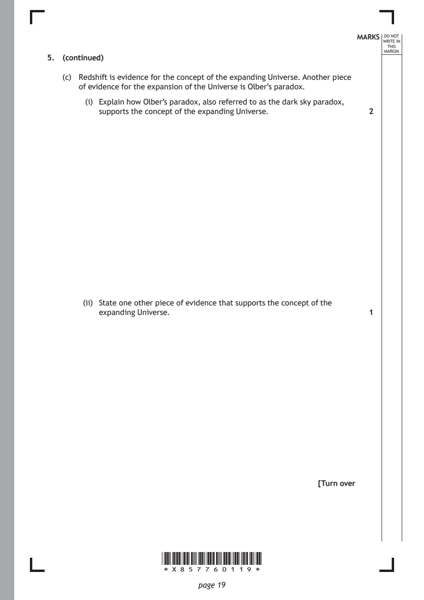
Selectable page text
MARKS _{W}^{D}_{R}^{O}_{I} _{T}^{N}OT
E IN
THIS
MARGIN
5. (continued)
(c) Redshift is evidence for the concept of the expanding Universe. Another piece
of evidence for the expansion of the Universe is Olber’s paradox.
(i) Explain how Olber’s paradox, also referred to as the dark sky paradox,
supports the concept of the expanding Universe. 2
(ii) State one other piece of evidence that supports the concept of the
expanding Universe. 1
[Turn over
*X857760119*
page 19PDF page 20
Paper 2, Question 6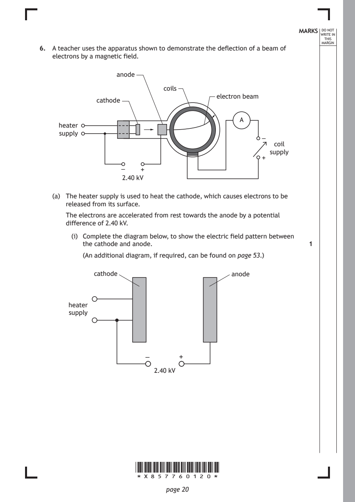
Selectable page text
MARKS _{W}^{D}_{R}^{O}_{I} _{T}^{N}OT
E IN
THIS
MARGIN
6. A teacher uses the apparatus shown to demonstrate the deflection of a beam of
electrons by a magnetic field.
anode
coils
electron beam
cathode
A
heater
supply
–
coil
supply
+
– +
2.40 kV
(a) The heater supply is used to heat the cathode, which causes electrons to be
released from its surface.
The electrons are accelerated from rest towards the anode by a potential
difference of 2.40 kV.
(i) Complete the diagram below, to show the electric field pattern between
the cathode and anode. 1
(An additional diagram, if required, can be found on page 53.)
cathode anode
heater
supply
– +
2.40 kV
*X857760120*
page 20PDF page 21
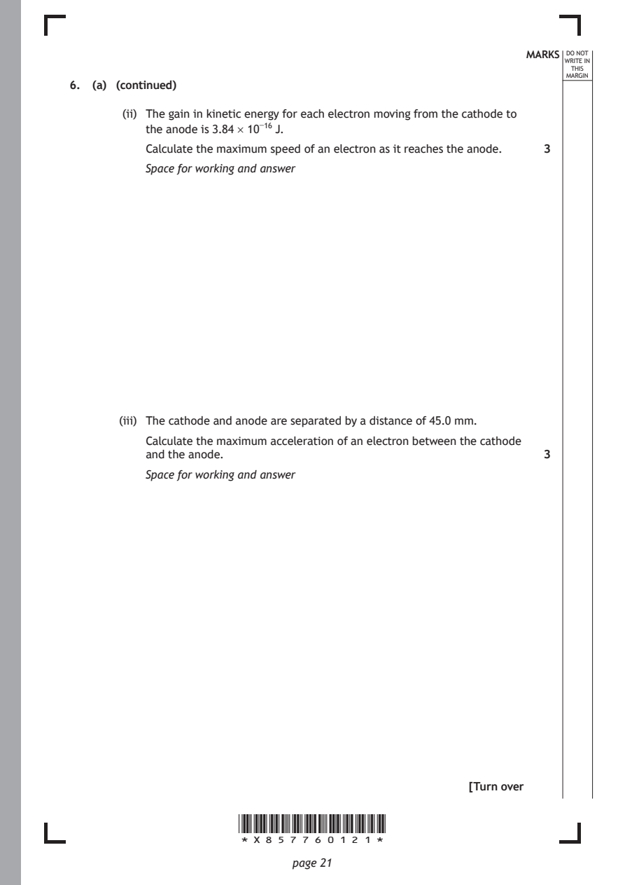
Selectable page text
MARKS _{W}^{D}_{R}^{O}_{I} _{T}^{N}OT
E IN
THIS
MARGIN
6. (a) (continued)
(ii) The gain in kinetic energy for each electron moving from the cathode to
the anode is 3.84 × 10⁻¹⁶ J.
Calculate the maximum speed of an electron as it reaches the anode. 3
Space for working and answer
(iii) The cathode and anode are separated by a distance of 45.0 mm.
Calculate the maximum acceleration of an electron between the cathode
and the anode. 3
Space for working and answer
[Turn over
*X857760121*
page 21PDF page 22
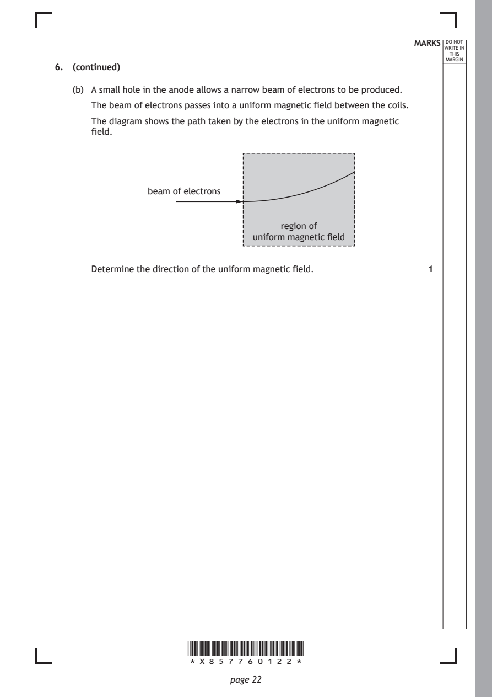
Selectable page text
MARKS _{W}^{D}_{R}^{O}_{I} _{T}^{N}OT
E IN
THIS
MARGIN
6. (continued)
(b) A small hole in the anode allows a narrow beam of electrons to be produced.
The beam of electrons passes into a uniform magnetic field between the coils.
The diagram shows the path taken by the electrons in the uniform magnetic
field.
beam of electrons
region of
uniform magnetic field
Determine the direction of the uniform magnetic field. 1
*X857760122*
page 22PDF page 23
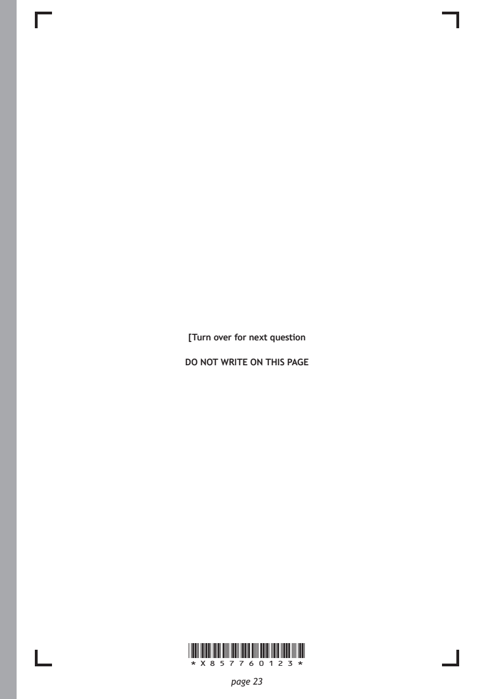
Selectable page text
[Turn over for next question
DO NOT WRITE ON THIS PAGE
*X857760123*
page 23PDF page 24
Paper 2, Question 7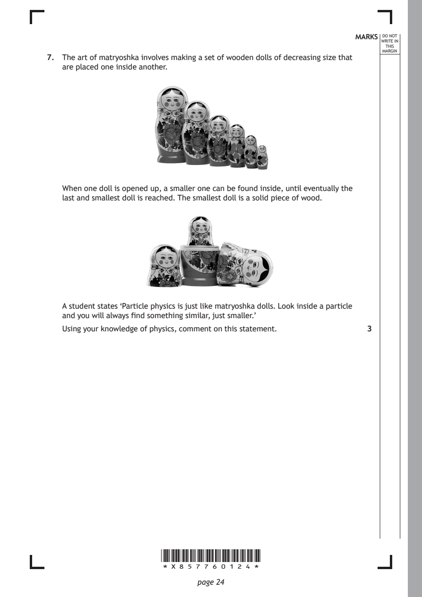
Selectable page text
MARKS _{W}^{D}_{R}^{O}_{I} _{T}^{N}OT
E IN
THIS
MARGIN
7. The art of matryoshka involves making a set of wooden dolls of decreasing size that
are placed one inside another.
When one doll is opened up, a smaller one can be found inside, until eventually the
last and smallest doll is reached. The smallest doll is a solid piece of wood.
A student states ‘Particle physics is just like matryoshka dolls. Look inside a particle
and you will always find something similar, just smaller.’
Using your knowledge of physics, comment on this statement. 3
*X857760124*
page 24PDF page 25
Selectable page text
MARKS _{W}^{D}_{R}^{O}_{I} _{T}^{N}OT
E IN
THIS
MARGIN
7. (continued)
[Turn over
*X857760125*
page 25PDF page 26
Paper 2, Question 8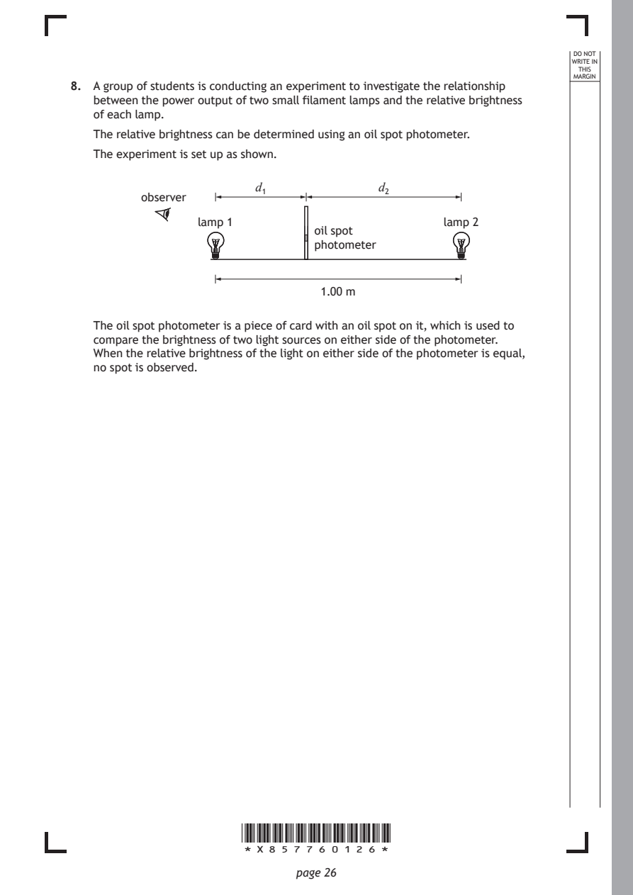
Selectable page text
DO NOT
WRITE IN
THIS
MARGIN
8. A group of students is conducting an experiment to investigate the relationship
between the power output of two small filament lamps and the relative brightness
of each lamp.
The relative brightness can be determined using an oil spot photometer.
The experiment is set up as shown.
d₁ d₂
observer
lamp 1 lamp 2
oil spot
photometer
1.00 m
The oil spot photometer is a piece of card with an oil spot on it, which is used to
compare the brightness of two light sources on either side of the photometer.
When the relative brightness of the light on either side of the photometer is equal,
no spot is observed.
*X857760126*
page 26PDF page 27
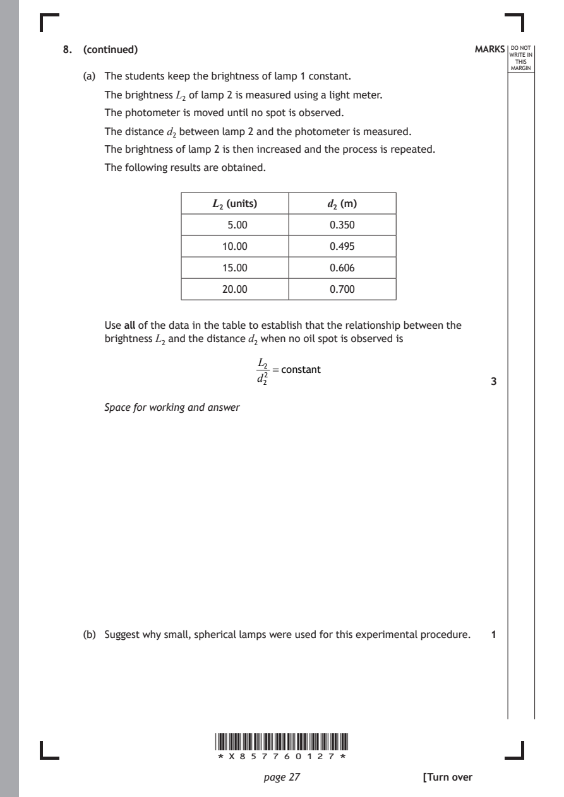
Selectable page text
8. (continued) MARKS _{W}^{D}_{R}^{O}_{I} _{T}^{N}OT
E IN
THIS
MARGIN
(a) The students keep the brightness of lamp 1 constant.
The brightness L₂ of lamp 2 is measured using a light meter.
The photometer is moved until no spot is observed.
The distance d₂ between lamp 2 and the photometer is measured.
The brightness of lamp 2 is then increased and the process is repeated.
The following results are obtained.
L₂ (units) d₂ (m)
5.00 0.350
10.00 0.495
15.00 0.606
20.00 0.700
Use all of the data in the table to establish that the relationship between the
brightness L₂ and the distance d₂ when no oil spot is observed is
L₂
=constant
d₂²
3
Space for working and answer
(b) Suggest why small, spherical lamps were used for this experimental procedure. 1
*X857760127*
page 27 [Turn overPDF page 28
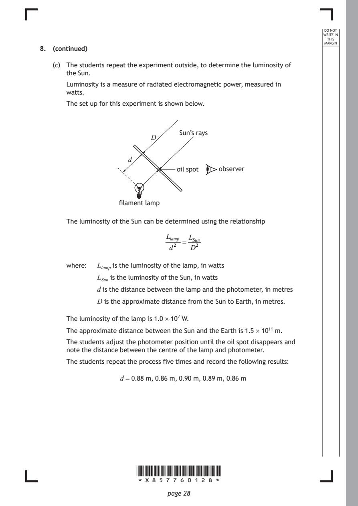
Selectable page text
DO NOT
WRITE IN
THIS
MARGIN
8. (continued)
(c) The students repeat the experiment outside, to determine the luminosity of
the Sun.
Luminosity is a measure of radiated electromagnetic power, measured in
watts.
The set up for this experiment is shown below.
Sun’s rays
D
d
oil spot observer
filament lamp
The luminosity of the Sun can be determined using the relationship
Lₗₐₘₚ L_{S}ᵤₙ
=
d² D²
where: Lₗₐₘₚ is the luminosity of the lamp, in watts
L_{S}ᵤₙ is the luminosity of the Sun, in watts
d is the distance between the lamp and the photometer, in metres
D is the approximate distance from the Sun to Earth, in metres.
The luminosity of the lamp is 1.0 × 10² W.
The approximate distance between the Sun and the Earth is 1.5 × 10¹¹ m.
The students adjust the photometer position until the oil spot disappears and
note the distance between the centre of the lamp and photometer.
The students repeat the process five times and record the following results:
d = 0.88 m, 0.86 m, 0.90 m, 0.89 m, 0.86 m
*X857760128*
page 28PDF page 29
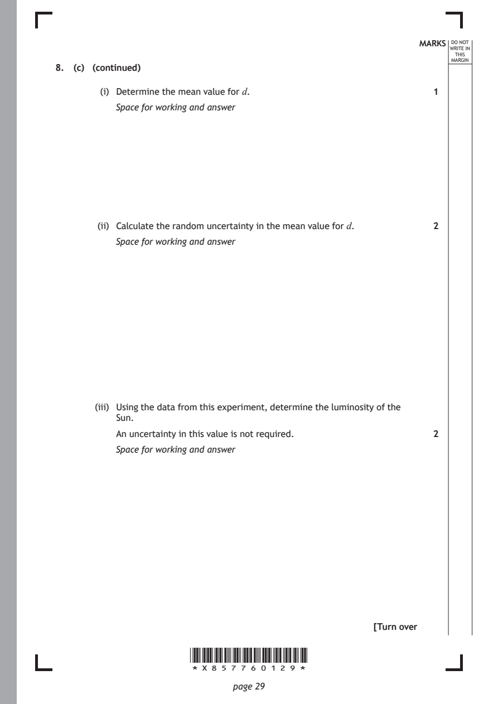
Selectable page text
MARKS _{W}^{D}_{R}^{O}_{I} _{T}^{N}OT
E IN
THIS
MARGIN
8. (c) (continued)
(i) Determine the mean value for d. 1
Space for working and answer
(ii) Calculate the random uncertainty in the mean value for d. 2
Space for working and answer
(iii) Using the data from this experiment, determine the luminosity of the
Sun.
An uncertainty in this value is not required. 2
Space for working and answer
[Turn over
*X857760129*
page 29PDF page 30
Paper 2, Question 9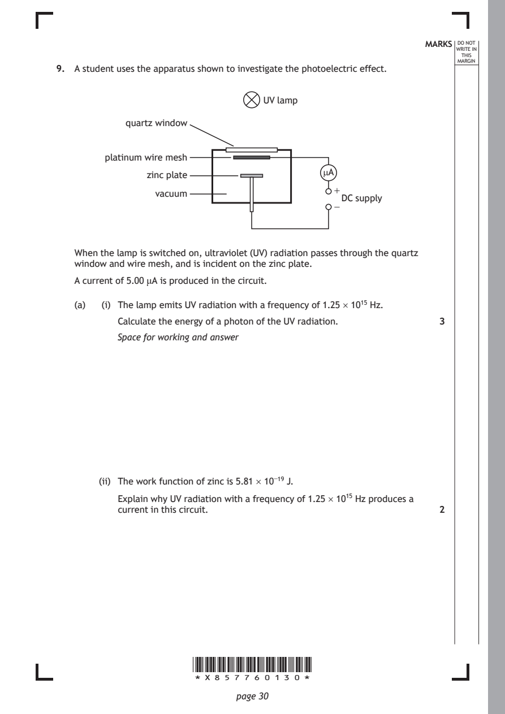
Selectable page text
MARKS _{W}^{D}_{R}^{O}_{I} _{T}^{N}OT
E IN
THIS
MARGIN
9. A student uses the apparatus shown to investigate the photoelectric effect.
UV lamp
quartz window
platinum wire mesh
zinc plate
µA
+
vacuum
DC supply
−
When the lamp is switched on, ultraviolet (UV) radiation passes through the quartz
window and wire mesh, and is incident on the zinc plate.
A current of 5.00 μA is produced in the circuit.
(a) (i) The lamp emits UV radiation with a frequency of 1.25 × 10¹⁵ Hz.
Calculate the energy of a photon of the UV radiation. 3
Space for working and answer
(ii) The work function of zinc is 5.81 × 10⁻¹⁹ J.
Explain why UV radiation with a frequency of 1.25 × 10¹⁵ Hz produces a
current in this circuit. 2
*X857760130*
page 30PDF page 31
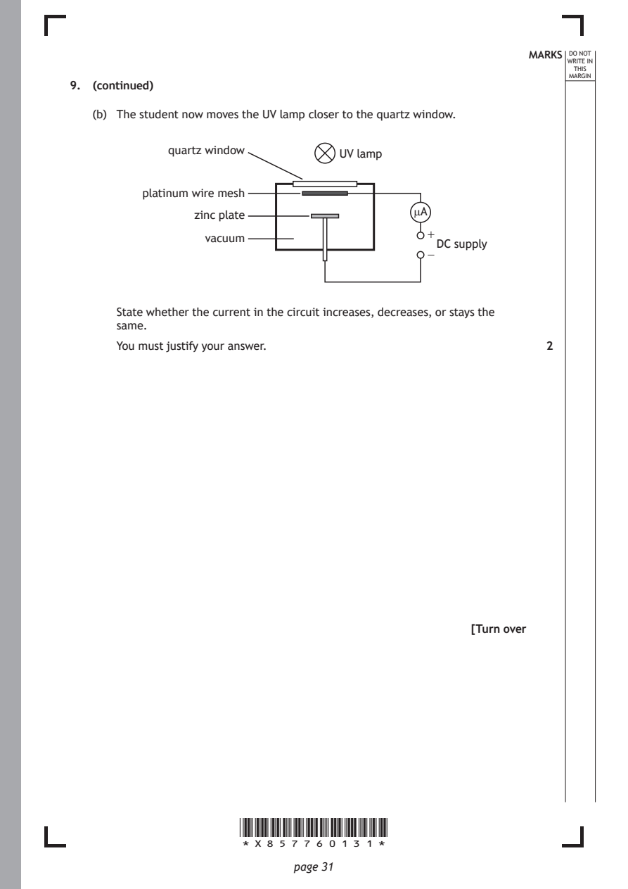
Selectable page text
MARKS _{W}^{D}_{R}^{O}_{I} _{T}^{N}OT
E IN
THIS
MARGIN
9. (continued)
(b) The student now moves the UV lamp closer to the quartz window.
quartz window
UV lamp
platinum wire mesh
zinc plate
µA
+
vacuum
DC supply
−
State whether the current in the circuit increases, decreases, or stays the
same.
You must justify your answer. 2
[Turn over
*X857760131*
page 31PDF page 32
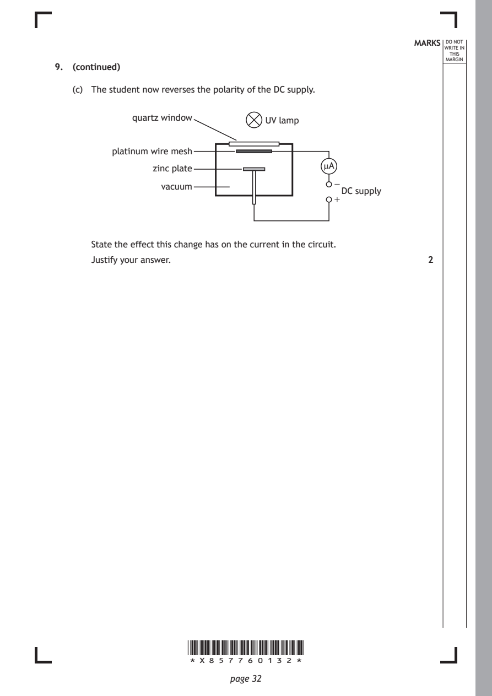
Selectable page text
MARKS _{W}^{D}_{R}^{O}_{I} _{T}^{N}OT
E IN
THIS
MARGIN
9. (continued)
(c) The student now reverses the polarity of the DC supply.
quartz window
UV lamp
platinum wire mesh
zinc plate
µA
−
vacuum
DC supply
+
State the effect this change has on the current in the circuit.
Justify your answer. 2
*X857760132*
page 32PDF page 33
Selectable page text
[Turn over for next question
DO NOT WRITE ON THIS PAGE
*X857760133*
page 33PDF page 34
Paper 2, Question 10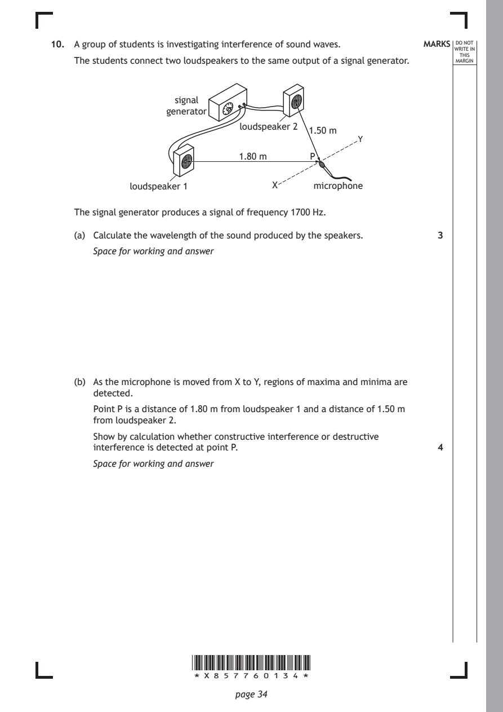
Selectable page text
10. A group of students is investigating interference of sound waves. MARKS _{W}^{D}_{R}^{O}_{I} _{T}^{N}OT
E IN
THIS
The students connect two loudspeakers to the same output of a signal generator. MARGIN
signal
generator
loudspeaker 2
1.50 m
Y
1.80 m P
loudspeaker 1 X microphone
The signal generator produces a signal of frequency 1700 Hz.
(a) Calculate the wavelength of the sound produced by the speakers. 3
Space for working and answer
(b) As the microphone is moved from X to Y, regions of maxima and minima are
detected.
Point P is a distance of 1.80 m from loudspeaker 1 and a distance of 1.50 m
from loudspeaker 2.
Show by calculation whether constructive interference or destructive
interference is detected at point P. 4
Space for working and answer
*X857760134*
page 34PDF page 35
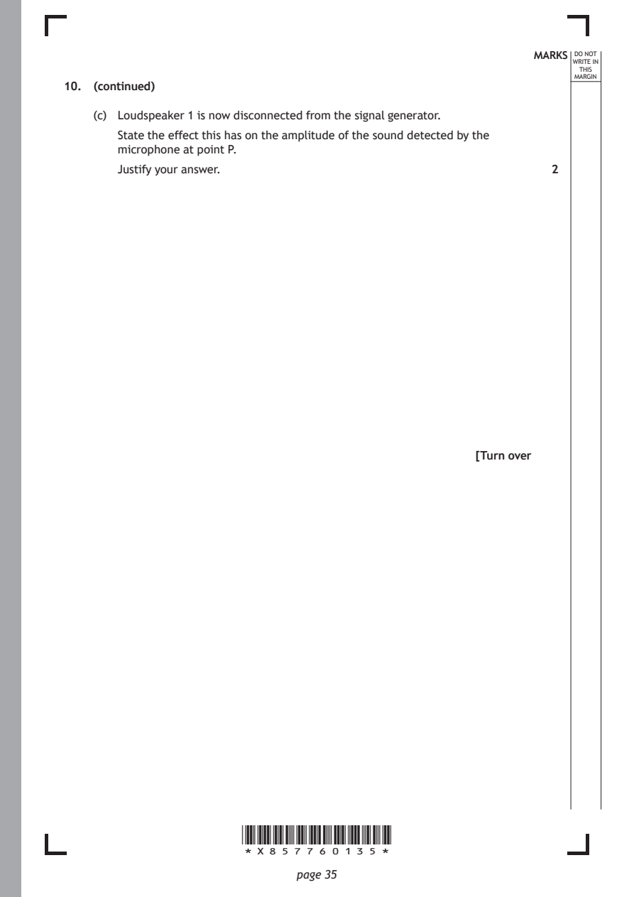
Selectable page text
MARKS _{W}^{D}_{R}^{O}_{I} _{T}^{N}OT
E IN
THIS
MARGIN
10. (continued)
(c) Loudspeaker 1 is now disconnected from the signal generator.
State the effect this has on the amplitude of the sound detected by the
microphone at point P.
Justify your answer. 2
[Turn over
*X857760135*
page 35PDF page 36
Paper 2, Question 11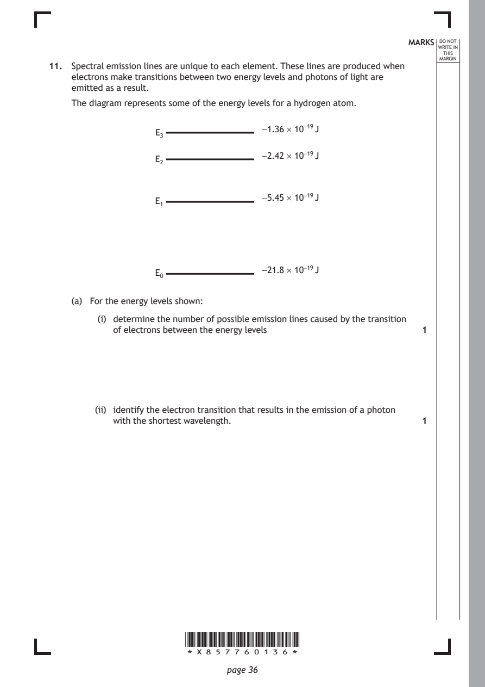
Selectable page text
MARKS _{W}^{D}_{R}^{O}_{I} _{T}^{N}OT
E IN
THIS
MARGIN
11. Spectral emission lines are unique to each element. These lines are produced when
electrons make transitions between two energy levels and photons of light are
emitted as a result.
The diagram represents some of the energy levels for a hydrogen atom.
−1.36 × 10⁻¹⁹ J
E₃
−2.42 × 10⁻¹⁹ J
E₂
−5.45 × 10⁻¹⁹ J
E₁
−21.8 × 10⁻¹⁹ J
E₀
(a) For the energy levels shown:
(i) determine the number of possible emission lines caused by the transition
of electrons between the energy levels 1
(ii) identify the electron transition that results in the emission of a photon
with the shortest wavelength. 1
*X857760136*
page 36PDF page 37
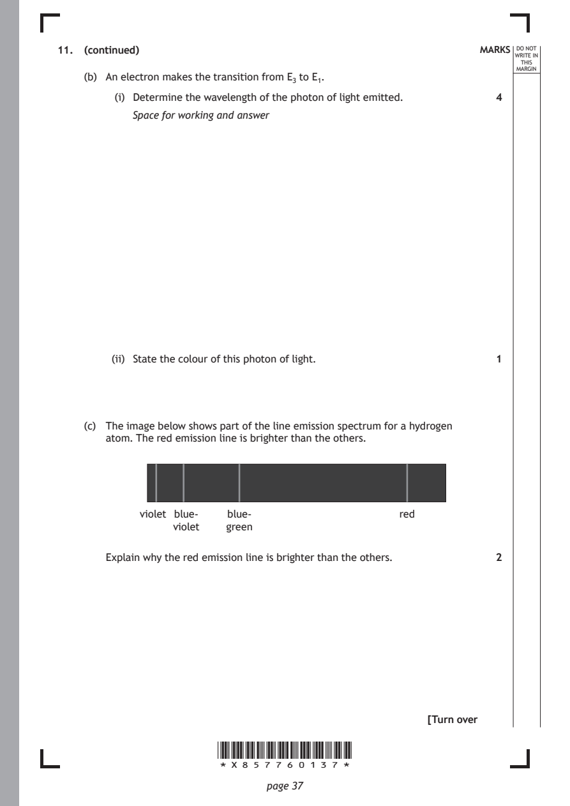
Selectable page text
11. (continued) MARKS _{W}^{D}_{R}^{O}_{I} _{T}^{N}OT
E IN
THIS
MARGIN
(b) An electron makes the transition from E₃ to E₁.
(i) Determine the wavelength of the photon of light emitted. 4
Space for working and answer
(ii) State the colour of this photon of light. 1
(c) The image below shows part of the line emission spectrum for a hydrogen
atom. The red emission line is brighter than the others.
violet blue- blue- red
violet green
Explain why the red emission line is brighter than the others. 2
[Turn over
*X857760137*
page 37PDF page 38
Paper 2, Question 12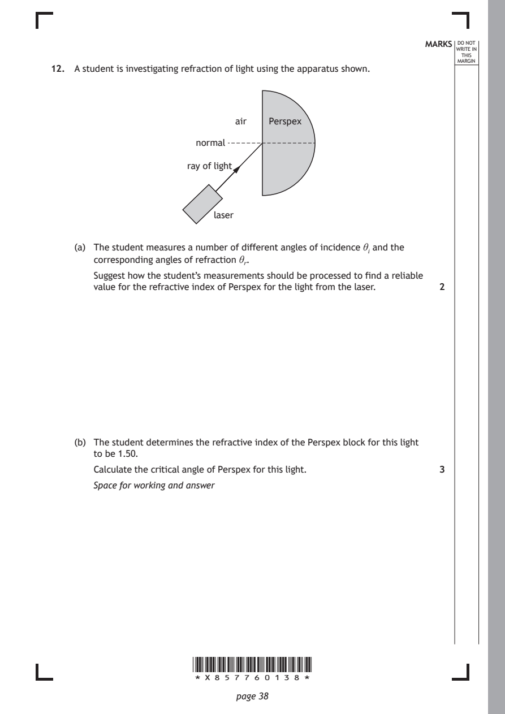
Selectable page text
MARKS _{W}^{D}_{R}^{O}_{I} _{T}^{N}OT
E IN
THIS
MARGIN
12. A student is investigating refraction of light using the apparatus shown.
air Perspex
normal
ray of light
laser
(a) The student measures a number of different angles of incidence θᵢ and the
corresponding angles of refraction θᵣ.
Suggest how the student’s measurements should be processed to find a reliable
value for the refractive index of Perspex for the light from the laser. 2
(b) The student determines the refractive index of the Perspex block for this light
to be 1.50.
Calculate the critical angle of Perspex for this light. 3
Space for working and answer
*X857760138*
page 38PDF page 39
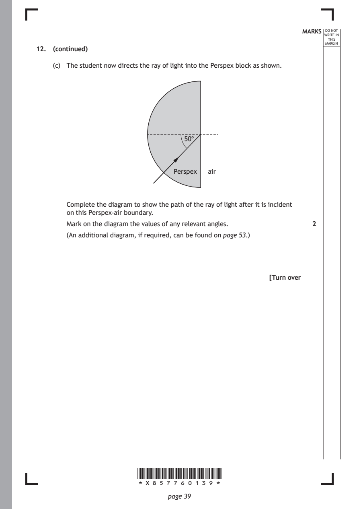
Selectable page text
MARKS _{W}^{D}_{R}^{O}_{I} _{T}^{N}OT
E IN
THIS
MARGIN
12. (continued)
(c) The student now directs the ray of light into the Perspex block as shown.
50°
Perspex air
Complete the diagram to show the path of the ray of light after it is incident
on this Perspex-air boundary.
Mark on the diagram the values of any relevant angles. 2
(An additional diagram, if required, can be found on page 53.)
[Turn over
*X857760139*
page 39PDF page 40
Paper 2, Question 13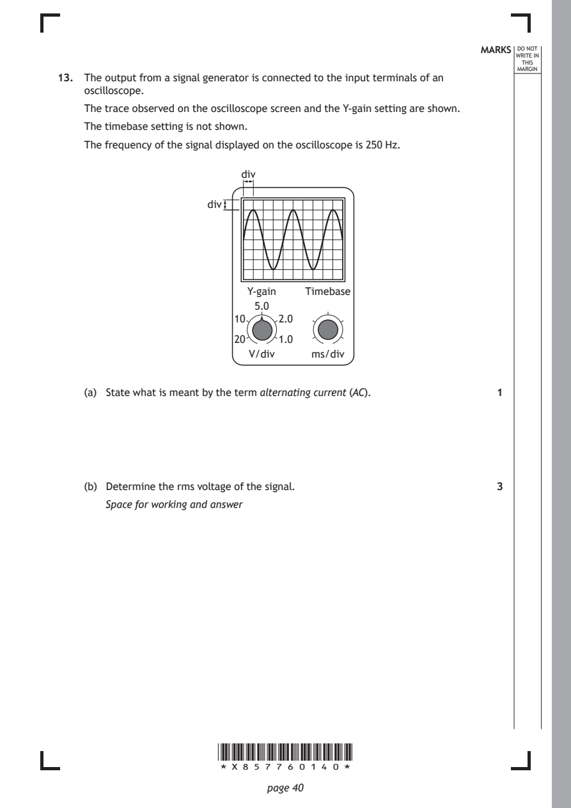
Selectable page text
MARKS _{W}^{D}_{R}^{O}_{I} _{T}^{N}OT
E IN
THIS
MARGIN
13. The output from a signal generator is connected to the input terminals of an
oscilloscope.
The trace observed on the oscilloscope screen and the Y-gain setting are shown.
The timebase setting is not shown.
The frequency of the signal displayed on the oscilloscope is 250 Hz.
div
div
Y-gain Timebase
5.0
10 2.0
20 1.0
V/div ms/div
(a) State what is meant by the term alternating current (AC). 1
(b) Determine the rms voltage of the signal. 3
Space for working and answer
*X857760140*
page 40PDF page 41
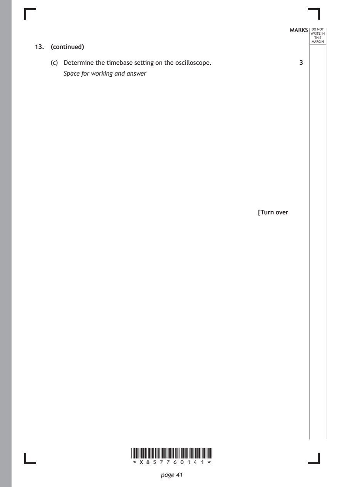
Selectable page text
MARKS _{W}^{D}_{R}^{O}_{I} _{T}^{N}OT
E IN
THIS
MARGIN
13. (continued)
(c) Determine the timebase setting on the oscilloscope. 3
Space for working and answer
[Turn over
*X857760141*
page 41PDF page 42
Paper 2, Question 14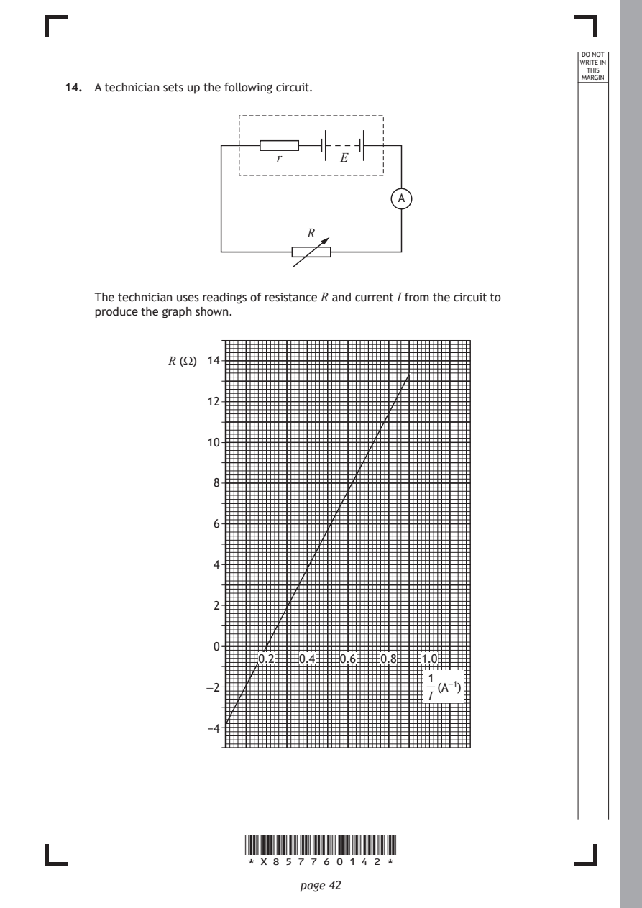
Selectable page text
DO NOT
WRITE IN
THIS
MARGIN
14. A technician sets up the following circuit.
r E
A
R
The technician uses readings of resistance R and current I from the circuit to
produce the graph shown.
R (Ω) 14
12
10
8
6
4
2
0
0.2 0.4 0.6 0.8 1.0
1
−2 (A⁻¹)
I
−4
*X857760142*
page 42PDF page 43
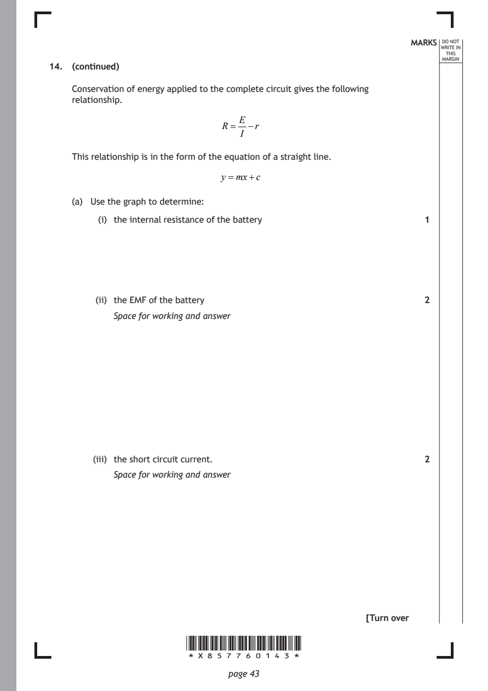
Selectable page text
MARKS _{W}^{D}_{R}^{O}_{I} _{T}^{N}OT
E IN
THIS
MARGIN
14. (continued)
Conservation of energy applied to the complete circuit gives the following
relationship.
E
R= −r
I
This relationship is in the form of the equation of a straight line.
y =mx+c
(a) Use the graph to determine:
(i) the internal resistance of the battery 1
(ii) the EMF of the battery 2
Space for working and answer
(iii) the short circuit current. 2
Space for working and answer
[Turn over
*X857760143*
page 43PDF page 44
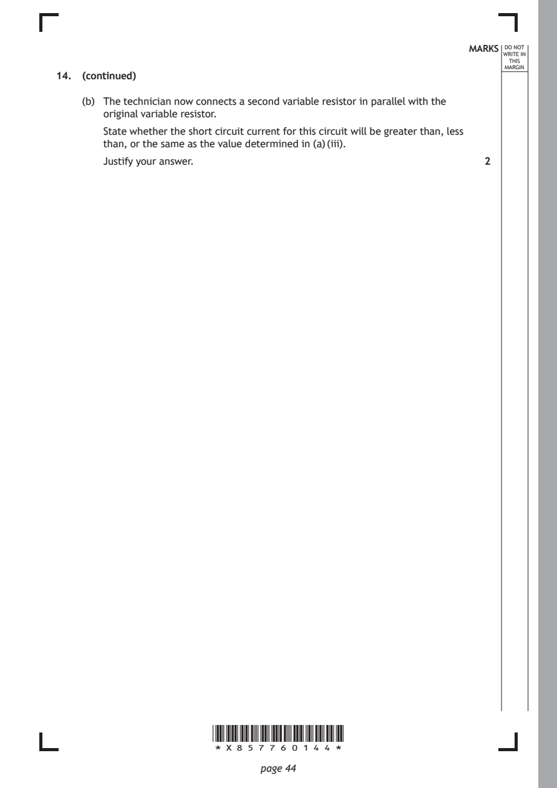
Selectable page text
MARKS _{W}^{D}_{R}^{O}_{I} _{T}^{N}OT
E IN
THIS
MARGIN
14. (continued)
(b) The technician now connects a second variable resistor in parallel with the
original variable resistor.
State whether the short circuit current for this circuit will be greater than, less
than, or the same as the value determined in (a) (iii).
Justify your answer. 2
*X857760144*
page 44PDF page 45
Selectable page text
[Turn over for next question
DO NOT WRITE ON THIS PAGE
*X857760145*
page 45PDF page 46
Paper 2, Question 15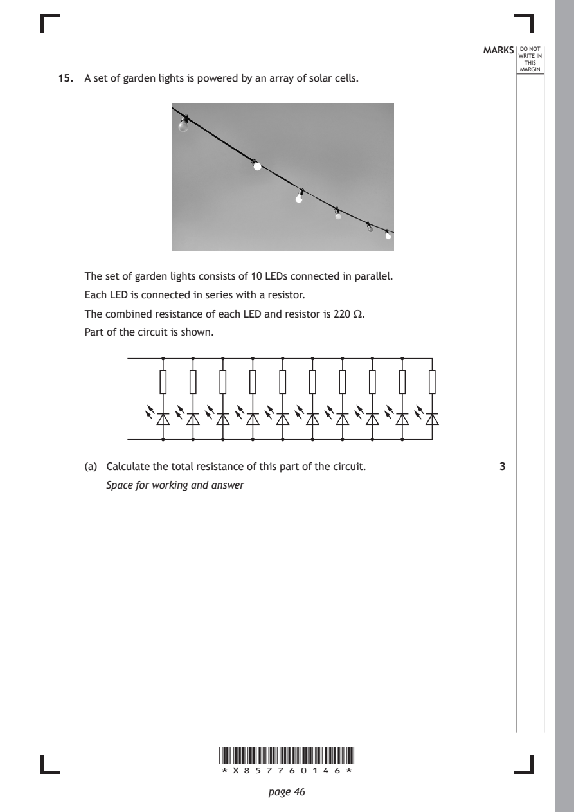
Selectable page text
MARKS _{W}^{D}_{R}^{O}_{I} _{T}^{N}OT
E IN
THIS
MARGIN
15. A set of garden lights is powered by an array of solar cells.
The set of garden lights consists of 10 LEDs connected in parallel.
Each LED is connected in series with a resistor.
The combined resistance of each LED and resistor is 220 Ω.
Part of the circuit is shown.
(a) Calculate the total resistance of this part of the circuit. 3
Space for working and answer
*X857760146*
page 46PDF page 47
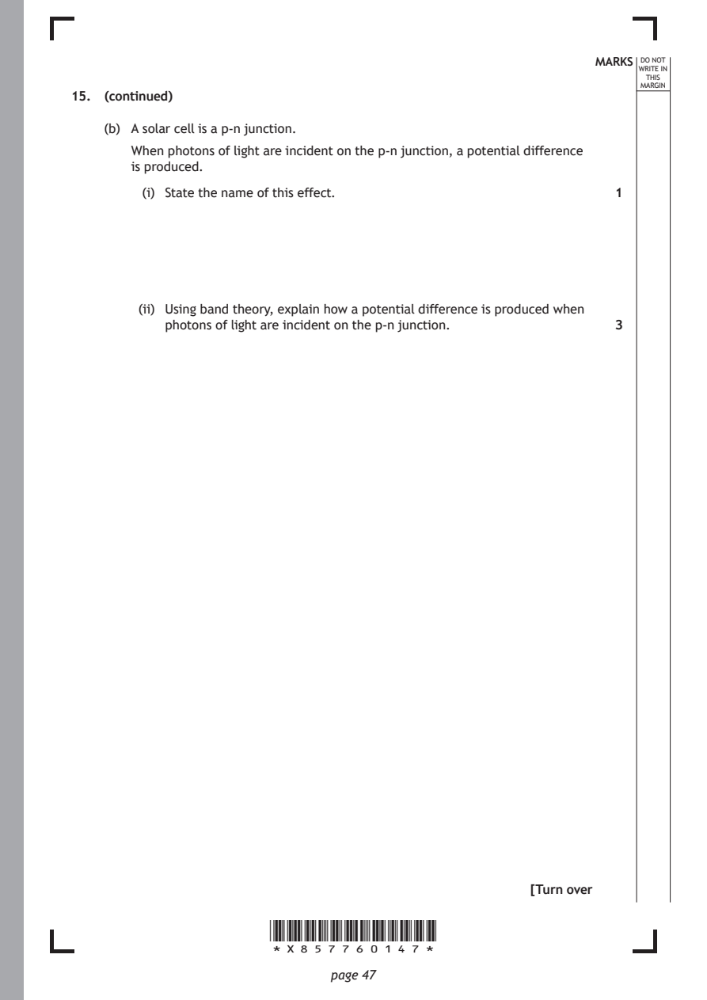
Selectable page text
MARKS _{W}^{D}_{R}^{O}_{I} _{T}^{N}OT
E IN
THIS
MARGIN
15. (continued)
(b) A solar cell is a p-n junction.
When photons of light are incident on the p-n junction, a potential difference
is produced.
(i) State the name of this effect. 1
(ii) Using band theory, explain how a potential difference is produced when
photons of light are incident on the p-n junction. 3
[Turn over
*X857760147*
page 47PDF page 48
Paper 2, Question 16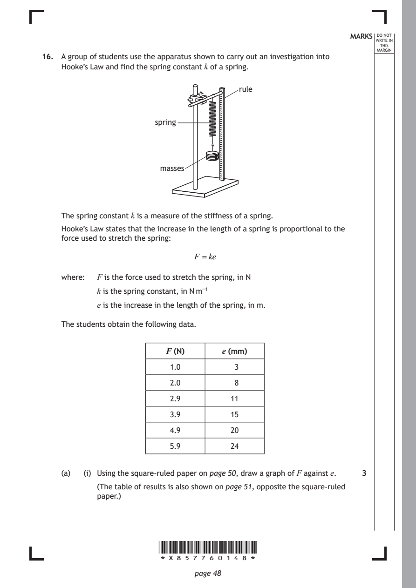
Selectable page text
MARKS _{W}^{D}_{R}^{O}_{I} _{T}^{N}OT
E IN
THIS
MARGIN
16. A group of students use the apparatus shown to carry out an investigation into
Hooke’s Law and find the spring constant k of a spring.
rule
spring
masses
The spring constant k is a measure of the stiffness of a spring.
Hooke’s Law states that the increase in the length of a spring is proportional to the
force used to stretch the spring:
F =ke
where: F is the force used to stretch the spring, in N
k is the spring constant, in N m⁻¹
e is the increase in the length of the spring, in m.
The students obtain the following data.
F (N) e (mm)
1.0 3
2.0 8
2.9 11
3.9 15
4.9 20
5.9 24
(a) (i) Using the square-ruled paper on page 50, draw a graph of F against e. 3
(The table of results is also shown on page 51, opposite the square-ruled
paper.)
*X857760148*
page 48PDF page 49
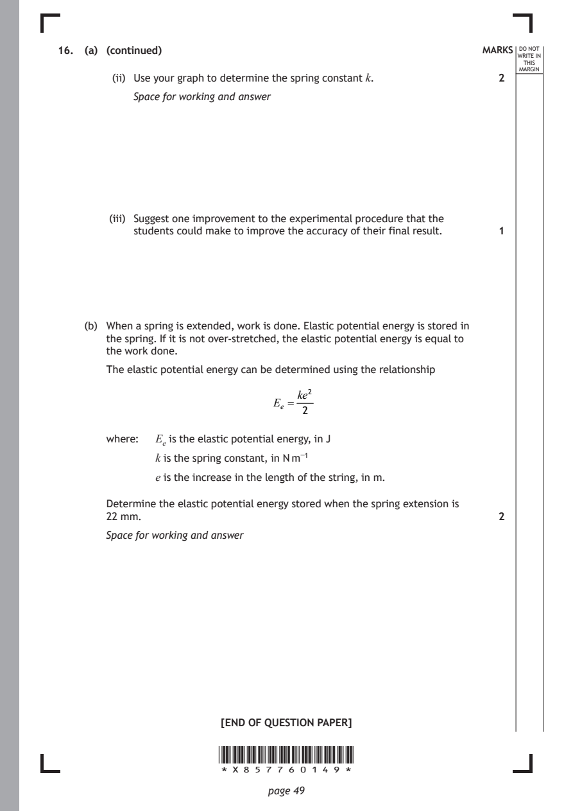
Selectable page text
16. (a) (continued) MARKS _{W}^{D}_{R}^{O}_{I} _{T}^{N}OT
E IN
THIS
ARGIN
(ii) Use your graph to determine the spring constant k. 2 ^{M}
Space for working and answer
(iii) Suggest one improvement to the experimental procedure that the
students could make to improve the accuracy of their final result. 1
(b) When a spring is extended, work is done. Elastic potential energy is stored in
the spring. If it is not over-stretched, the elastic potential energy is equal to
the work done.
The elastic potential energy can be determined using the relationship
ke²
Eₑ =
2
where: Eₑ is the elastic potential energy, in J
k is the spring constant, in N m⁻¹
e is the increase in the length of the string, in m.
Determine the elastic potential energy stored when the spring extension is
22 mm. 2
Space for working and answer
[END OF QUESTION PAPER]
*X857760149*
page 49PDF page 50
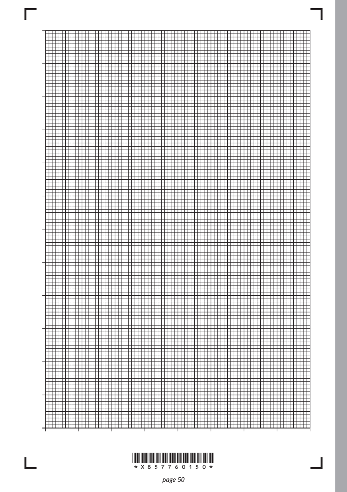
Selectable page text
*X857760150*
page 50PDF page 51
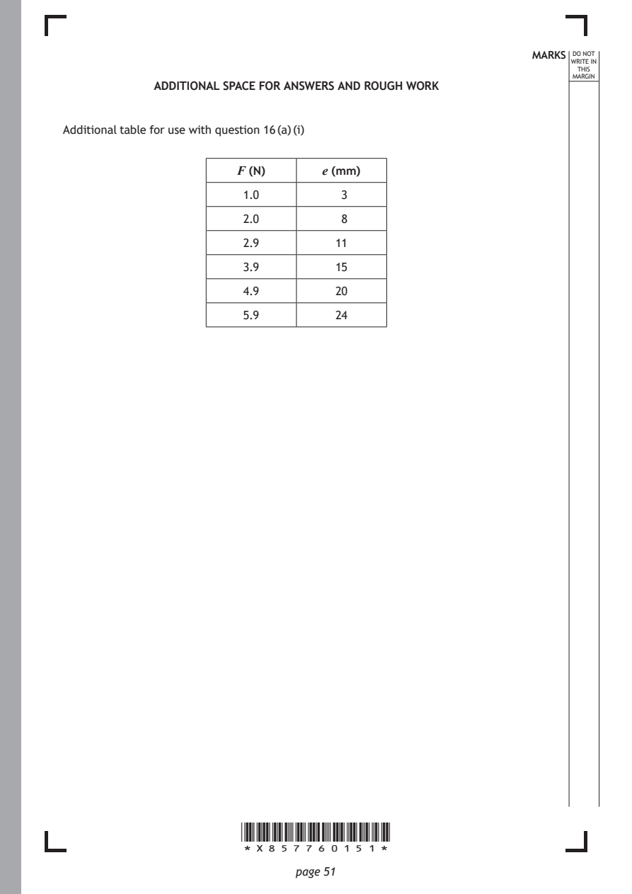
Selectable page text
MARKS _{W}^{D}_{R}^{O}_{I} _{T}^{N}OT
E IN
THIS
MARGIN
ADDITIONAL SPACE FOR ANSWERS AND ROUGH WORK
Additional table for use with question 16 (a) (i)
F (N) e (mm)
1.0 3
2.0 8
2.9 11
3.9 15
4.9 20
5.9 24
*X857760151*
page 51PDF page 52
Selectable page text
*X857760152*
page 52PDF page 53
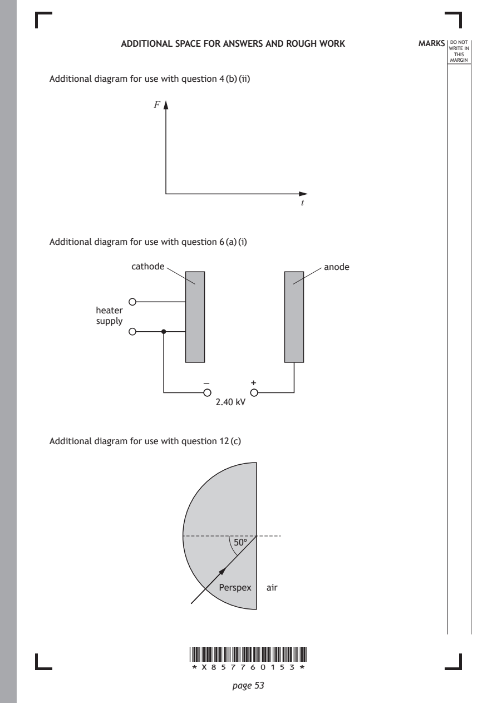
Selectable page text
ADDITIONAL SPACE FOR ANSWERS AND ROUGH WORK MARKS _{W}^{D}_{R}^{O}_{I} _{T}^{N}OT
E IN
THIS
MARGIN
Additional diagram for use with question 4 (b) (ii)
F
t
Additional diagram for use with question 6 (a) (i)
cathode anode
heater
supply
– +
2.40 kV
Additional diagram for use with question 12 (c)
50°
Perspex air
*X857760153*
page 53PDF page 54

Selectable page text
MARKS _{W}^{D}_{R}^{O}_{I} _{T}^{N}OT
E IN
THIS
MARGIN
ADDITIONAL SPACE FOR ANSWERS AND ROUGH WORK
*X857760154*
page 54PDF page 55
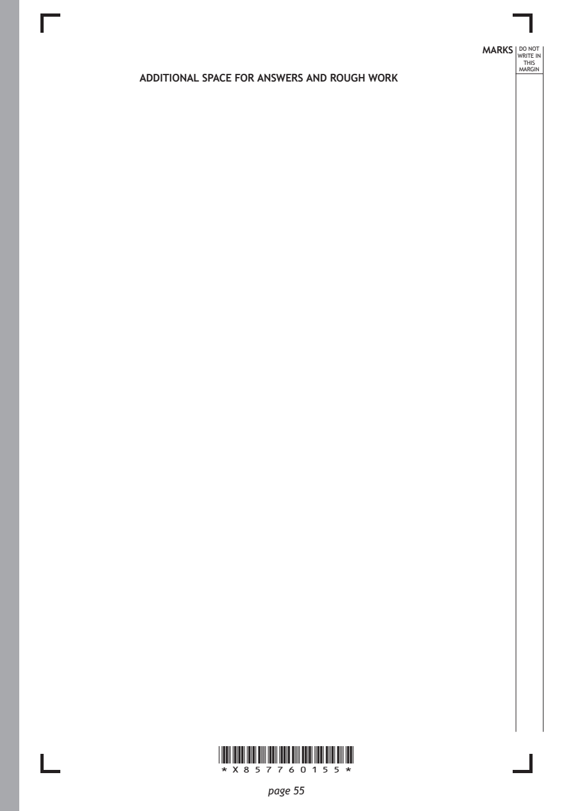
Selectable page text
MARKS _{W}^{D}_{R}^{O}_{I} _{T}^{N}OT
E IN
THIS
MARGIN
ADDITIONAL SPACE FOR ANSWERS AND ROUGH WORK
*X857760155*
page 55PDF page 56
Selectable page text
[BLANK PAGE]
DO NOT WRITE ON THIS PAGE
Acknowledgement of copyright
Question 3 ANDRANIK HAKOBYAN/shutterstock.com
Question 7 Kasefoto/shutterstock.com
Question 15 Sergey Ryzhov/shutterstock.com
*X857760156*
page 56